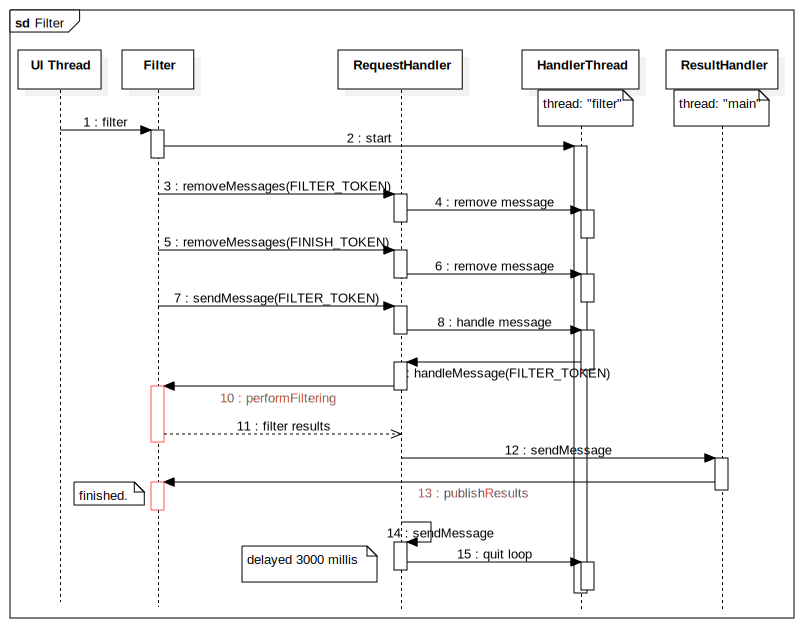

简介 Filter 是 Android 提供的用于搜索或过滤数据的工具类，它在 android.widget 包中，从包名上看，和控件相关，适用于处理界面相关的搜索场景。
通常可与 SearchView 控件组合使用，可为用户提供便捷的列表项搜索功能。
用法 考虑在一个文本类型的列表视图上进行搜索，例如联系人列表，为了展示数据通常使用一个 ListView 或 RecyclerView 和实现它们对应的适配器，那么适配器很适合成为一个 Filterable 子类型，支持对其内部的字符串列表数据进行搜索。
Filterable 表示可被过滤，实现这个接口，只需要实现一个方法，即提供一个 Filter 过滤器。
1 2 3 public interface Filterable Filter getFilter () ; }
下面是一个可被过滤或搜索的 Adapter 的核心代码示例：
1 2 3 4 5 6 7 8 9 10 11 12 13 14 15 16 17 18 19 20 21 22 23 24 25 26 27 28 29 30 31 32 33 34 35 36 37 38 39 public class MyListViewAdapter extends XXXAdapter implements Filterable 2private List<String> mStringList; 2public MyStringList (List<String> mStringList) this .mStringList = mStringList; } @Override public Filter getFilter () return new Filter() { @Override protected FilterResults performFiltering (CharSequence constraint) FilterResults results = new FilterResults(); if (TextUtils.isEmpty(constraint)) return results; List<String> resultList = new ArrayList<>(); for (String str : mStringList) { String key = constraint.toString().toLowerCase(); if (str.toLowerCase().contains(key)) resultList.add(str); } results.values = resultList; results.count = resultList.size(); return results; } @Override protected void publishResults (CharSequence constraint, FilterResults results) List<String> resultList = (List<String>) results.values; 2222notifyDataSetChanged(); } }; } }
核心逻辑是在 getFilter 中返回一个过滤器的匿名内部类对象，它实现了 Filter 的两个抽象方法，performFiltering 用于实现数据过滤的逻辑，可以根据过滤关键字 constraint 对数据进行筛选过滤，得到结果，过滤结果由 FilterResults 对象进行携带，它有两个成员，values 存放过滤结果数据，通常是数据列表，count 存放过滤结果数据的数量，通常是数据列表元素个数，performFiltering 将在新的子线程中执行，过滤完毕后将结果存放至 FilterResults 对象中返回；
publishResults 用于处理结果数据，在这里接收和使用过滤出来的结果数据，例如在这里对列表控件进行刷新。
实现完过滤逻辑，那么下面进行调用：
1 2 3 4 5 6 7 MyListViewAdapter stringList = new MyListViewAdapter( Arrays.asList("string0" , "string1" , "string2" , "string3" ) ); stringList.getFilter().filter("1" );
使用 Filter 的 filter 方法，传入关键字参数进搜索，搜索执行完毕后，将会执行 publishResults 方法，它会在创建 Filter 的线程中执行，通常是 UI 线程。
最终过滤结果为 "string1" ，此时将会刷新适配器数据，从而更新界面上的列表显示。
用法看起来还是比较简单的，下面分析一下它的代码和原理实现。
分析 1 2 3 4 5 6 7 8 9 10 11 12 13 14 15 16 17 public abstract class Filter 2 }
首先从 Filter 类的文档注释上看，Filter 过滤器通常由 Filterable 类型创建，就是可被筛选的类型。Filter 执行筛选操作时将会是异步的，而且筛选任务将被加入队列执行，当新的筛选任务被创建时，如果还有排在队列中的筛选任务未执行，则会被取消。
听起来确实符合再界面进行搜索的场景，当用户在搜索框中输入关键字时，执行搜索操作，若此时还未搜索完成，用户清除文本框中的文本，再次输入新的关键字进行搜索，那么上一次搜索结果就过时了，自然需要取消上一次的搜索任务，合情合理。
知道了 Filter 类型的功能和适用场景，下面具体分析是如何实现的，从调用搜索的入口方法 filter 开始：
1 2 3 4 5 6 7 8 9 10 11 12 13 14 15 16 17 18 19 20 21 22 23 24 25 26 27 28 29 30 public final void filter (CharSequence constraint) filter(constraint, null ); } public final void filter (CharSequence constraint, FilterListener listener) synchronized (mLock) { if (mThreadHandler == null ) { 222222 HandlerThread thread = new HandlerThread( THREAD_NAME, android.os.Process.THREAD_PRIORITY_BACKGROUND); thread.start(); mThreadHandler = new RequestHandler(thread.getLooper()); } final long delay = (mDelayer == null ) ? 0 : mDelayer.getPostingDelay(constraint); Message message = mThreadHandler.obtainMessage(FILTER_TOKEN); RequestArguments args = new RequestArguments(); args.constraint = constraint != null ? constraint.toString() : null ; args.listener = listener; message.obj = args; mThreadHandler.removeMessages(FILTER_TOKEN); mThreadHandler.removeMessages(FINISH_TOKEN); mThreadHandler.sendMessageDelayed(message, delay); } }
首先是创建了一个 HandlerThread 对象（HandlerThread 是一个内部具有 Looper 循环队列的线程，当你持有这个 Looper 循环对象的 Handler，就能使用 Handler 对象向这个线程 post 投递任务去按顺序执行了，同时也可以移除队列中未执行的任务）。然后创建了这个 HandlerThread 的 Looper 队列对应的 Handler，就是 mThreadHandler 。这个方法的最后三行依次移除了 FILTER_TOKEN 和 FINISH_TOKEN 消息，同时发送了一个 FILTER_TOKEN 消息。就是说如果 HanderThread 的 Looper 循环中还有未执行的消息，那么将被取消，将为新发送的 FILTER_TOKEN 消息让路。这个方法的逻辑并不复杂，那么接着看 FILTER_TOKEN 消息是如何被接收处理的，FILTER_TOKEN 消息的处理逻辑在 mThreadHandler 对象所属类中，也就是 RequestHandler 中：
1 2 3 4 5 6 7 8 9 10 11 12 13 14 15 16 17 18 19 20 21 22 23 24 25 26 27 28 29 30 31 32 33 34 35 36 37 38 39 40 41 42 43 44 45 46 47 private class RequestHandler extends Handler public RequestHandler (Looper looper) super (looper); } public void handleMessage (Message msg) int what = msg.what; Message message; switch (what) { case FILTER_TOKEN: RequestArguments args = (RequestArguments) msg.obj; try { args.results = performFiltering(args.constraint); } catch (Exception e) { args.results = new FilterResults(); Log.w(LOG_TAG, "An exception occured during performFiltering()!" , e); } finally { message = mResultHandler.obtainMessage(what); message.obj = args; message.sendToTarget(); } synchronized (mLock) { if (mThreadHandler != null ) { Message finishMessage = mThreadHandler.obtainMessage(FINISH_TOKEN); mThreadHandler.sendMessageDelayed(finishMessage, 3000 ); } } break ; case FINISH_TOKEN: synchronized (mLock) { if (mThreadHandler != null ) { mThreadHandler.getLooper().quit(); mThreadHandler = null ; } } break ; } } }
首先就是调用了 performFiltring 执行 Filter 实现类实现的过滤逻辑，由于这里处于子线程，所以不会阻塞 UI 线程执行，在执行完毕后，收到结果对象，然后将带有 results 结果对象的 obj 对象以相同的 waht 即 FILTER_TOKEN 发送给了 mResultHandler ，它是在 Filter 的构造方法中创建的：
1 2 3 public Filter () mResultHandler = new ResultsHandler(); }
mResultHandler 也是一个 Handler ，那么这里可以知道，Filter 只能在 UI 线程创建使用（不过应该也可在具有 Looper 循环的线程中使用），因为 Handler 的默认构造方法会绑定到当前线程的 Looper 循环上，如果创建 Filter 的线程中没有 Looper 循环就会发生 RuntimeException 异常。
1 2 3 4 5 6 7 8 9 10 11 12 13 14 15 16 17 public Handler { ... 2public Handler () this (null , false ); } 2public Handler (@Nullable Callback callback, boolean async) ... mLooper = Looper.myLooper(); if (mLooper == null ) { throw new RuntimeException( "Can't create handler inside thread " + Thread.currentThread() + " that has not called Looper.prepare()" ); } ... } }
继续看 RequestHandler 怎么继续处理消息的：
1 2 3 4 5 6 7 8 9 10 11 12 13 14 15 16 17 18 19 20 21 22 private class ResultsHandler extends Handler @Override public void handleMessage (Message msg) RequestArguments args = (RequestArguments) msg.obj; publishResults(args.constraint, args.results); if (args.listener != null ) { int count = args.results != null ? args.results.count : -1 ; args.listener.onFilterComplete(count); } } }
看起比较简单，结合注释，就是直接将消息对象中的结果回调给 Filter 实现类的 publishResults 方法中，交给 UI 线程进行处理，如果设置的有 listener ，则将过滤完成的消息回调给 listener 并给予过滤结果数据的 count 值。
回到 RequestHandler ，handleMessage 方法后面还有一些逻辑没看， mThreadHandler 发送了一个 3 秒后的 FINISH_TOKEN 延迟消息，也就是设置一个清理资源的任务，3 秒后结束掉 HandlerThread 中的 Looper 循环队列，释放 HandlerThread 线程。如果有新的搜索任务，则会重新在 filter 方法中创建新的 HandlerThread 和 mThreadHandler 对象以供使用。
到这里 Filter 的代码流程就分析完了，相对来说它是一个相对容易理解的 Android 工具类。
再说一点就是 Filter 的里面包含 3 块同步块的代码，synchronized (mLock) { ... }，说明 filter 方法是支持在子线程调用的。同步代码保证了 mThreadHandler 对象可被正确的初始化，避免多线程并发执行而出现错误；同时也保证了提交过滤任务的顺序。
时序图 下面是 Filter 工作的时序图：
